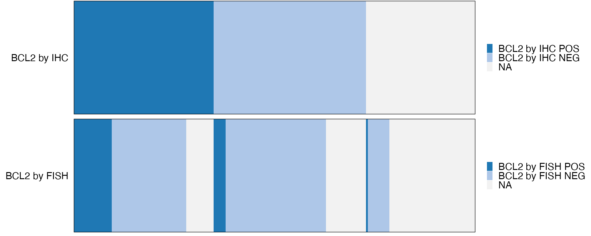
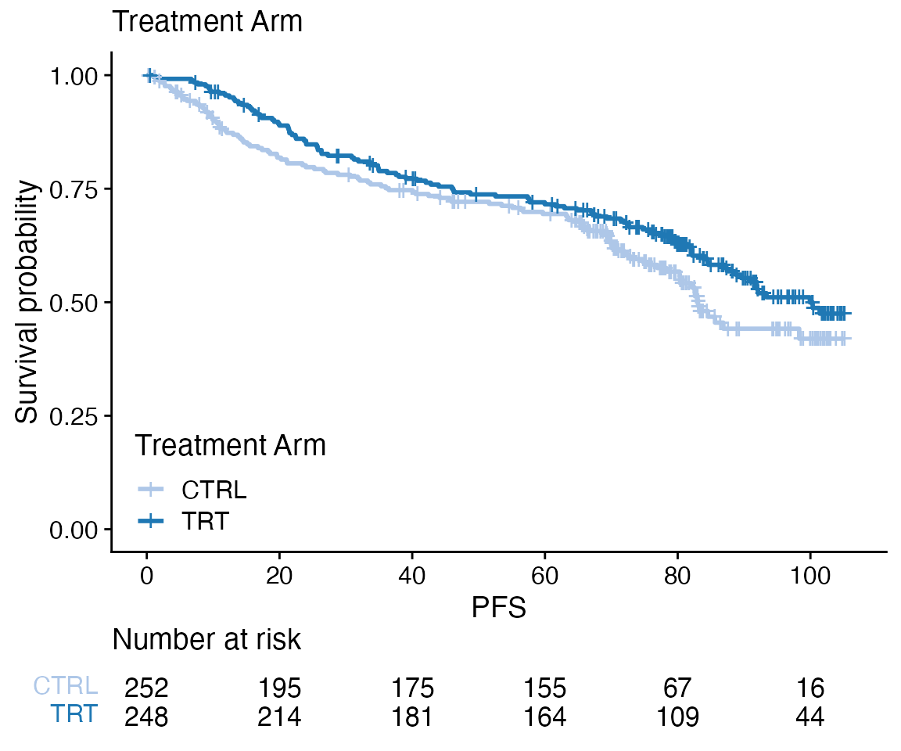
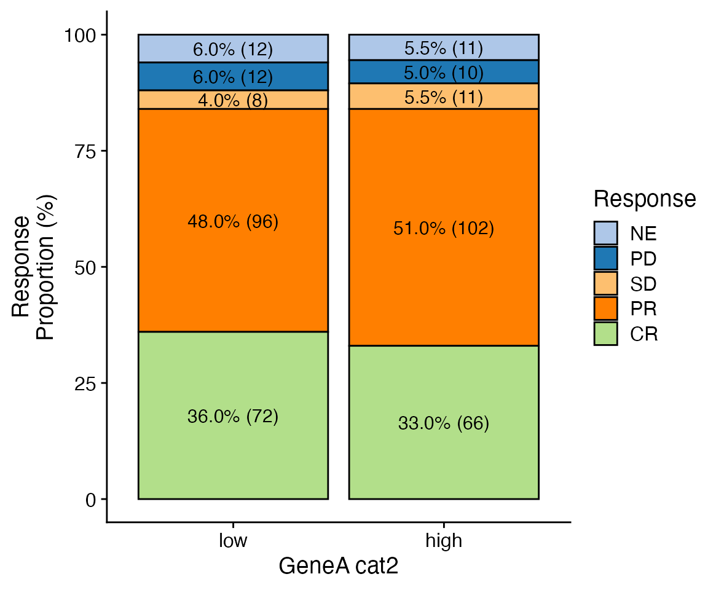
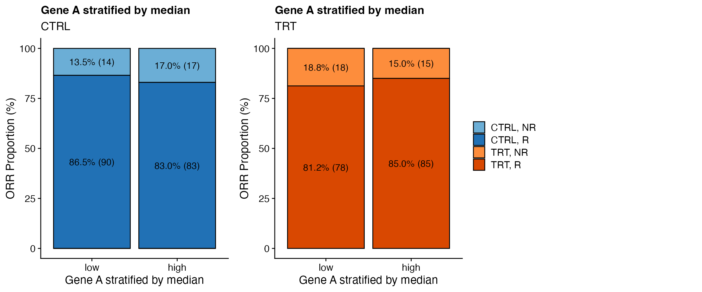
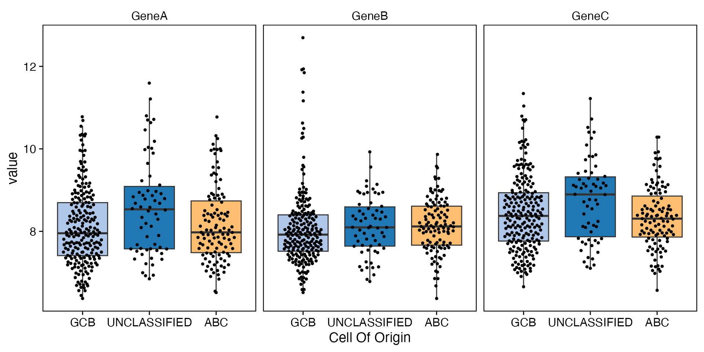

Exploratory biomarker analysis
Malgorzata Nowicka
2022-04-03
Exploratory_Biomarker_Analysis.Rmd
### Packages to compile rmarkdown
library(knitr)
library(rmarkdown)
### Packages for nice tables
library(kableExtra)
font_size <- 9
cache <- 0
### Set global option for font_size for bkable in this document
options(bkable_font_size = font_size)
options(bkable_full_width = TRUE)
knitr::opts_chunk$set(cache = cache, cache.comments = FALSE, echo = TRUE, warning = FALSE, message = FALSE, error = FALSE, fig.width = 6, fig.height = 5, fig.align = "center", tidy=TRUE, tidy.opts = list(width.cutoff = 80))
ggplot2::theme_set(cowplot::theme_cowplot())
library(BiomarkerWrappers)Load data
bdata object contains random survival and biomarker data. It is not expected to observe any biologically meaningful associations. The goal for this data sets is to solely demonstrate the functionality of this package.
data(bdata)
### Dichotomize gene expression into low and high
genes <- c("BCL2", "GeneA", "GeneB", "GeneC", "GeneD")
data_cat2 <- dplyr::mutate_all(bdata[, genes], wrapper_cut_2groups)
colnames(data_cat2) <- paste0(genes, "_cat2")
### Stratify gene expression into quartiles
data_cat4 <- dplyr::mutate_all(bdata[, genes], wrapper_cut_quartiles)
colnames(data_cat4) <- paste0(genes, "_cat4")
bdata <- cbind(bdata, data_cat2, data_cat4)Define variable names
variable_names <- format_variable_names(bdata)
variable_names## Patient_ID Age Sex IPI
## "Patient ID" "Age" "Sex" "IPI"
## Geographic_Region Treatment_Arm PFS PFS_Event
## "Geographic Region" "Treatment Arm" "PFS" "PFS Event"
## Response Cell_Of_Origin BCL2_by_IHC BCL2_by_FISH
## "Response" "Cell Of Origin" "BCL2 by IHC" "BCL2 by FISH"
## BCL2 GeneA GeneB GeneC
## "BCL2" "GeneA" "GeneB" "GeneC"
## GeneD BEP_RNAseq ORR BCL2_cat2
## "GeneD" "BEP RNAseq" "ORR" "BCL2 cat2"
## GeneA_cat2 GeneB_cat2 GeneC_cat2 GeneD_cat2
## "GeneA cat2" "GeneB cat2" "GeneC cat2" "GeneD cat2"
## BCL2_cat4 GeneA_cat4 GeneB_cat4 GeneC_cat4
## "BCL2 cat4" "GeneA cat4" "GeneB cat4" "GeneC cat4"
## GeneD_cat4
## "GeneD cat4"
### Adjust variable names
variable_names[["GeneA_cat2"]] <- "Gene A stratified by median"Tile plot
### Plot generated using geom_tile
wrapper_tile_plot1_core(bdata, y_vars = c("BCL2_by_IHC", "BCL2_by_FISH"))
cat("\n\n ------ \n\n")
### Plot generated using geom_col. It has substantially smaller size when
### sample size is large.
wrapper_tile_plot2_core(bdata, y_vars = c("BCL2_by_IHC", "BCL2_by_FISH"))
Cox regression
### Biomarker effect
data <- bdata
tte_var <- "PFS"
censor_var <- "PFS_Event"
biomarker_vars <- c("GeneA_cat2", "GeneA")
adjustment_vars <- "IPI"
treatment_var = "Treatment_Arm"
wrapper_cox_regression_biomarker(data, tte_var = tte_var, censor_var = censor_var,
biomarker_vars = biomarker_vars, adjustment_vars = adjustment_vars, treatment_var = treatment_var)| Treatment Arm | Biomarker | Subgroup | Total N | Total Events | N | Events | MST | MST 95% CI | HR | HR 95% CI | P-value | Adj. P-value |
|---|---|---|---|---|---|---|---|---|---|---|---|---|
| CTRL | GeneA cat2 | low | 204 | 85 | 104 | 41 (39.4%) | NA | (76.9 - NA) | ||||
| high | 204 | 85 | 100 | 44 (44.0%) | 83.1 | (82.1 - NA) | 1.00 | (0.65 - 1.55) | 0.9828 | 0.9828 | ||
| TRT | GeneA cat2 | low | 196 | 83 | 96 | 40 (41.7%) | 99.9 | (82.2 - NA) | ||||
| high | 196 | 83 | 100 | 43 (43.0%) | >100.0 | (81.6 - NA) | 0.91 | (0.59 - 1.41) | 0.6827 | 0.9828 | ||
| CTRL | GeneA | 204 | 85 | 1.06 | (0.86 - 1.31) | 0.5723 | 0.9828 | |||||
| TRT | GeneA | 196 | 83 | 1.03 | (0.82 - 1.29) | 0.8129 | 0.9828 |
## To represent the results with a forest plot
x <- wrapper_cox_regression_biomarker(data, tte_var = tte_var, censor_var = censor_var,
biomarker_vars = biomarker_vars, adjustment_vars = adjustment_vars, treatment_var = treatment_var,
print_total = FALSE, print_adjpvalues = FALSE)
bforest(x)
### Treatment effect within biomarker subgroups
data <- bdata
tte_var <- "PFS"
censor_var <- "PFS_Event"
treatment_var = "Treatment_Arm"
biomarker_vars <- c("GeneA_cat2", "GeneB_cat2")
adjustment_vars <- "IPI"
wrapper_cox_regression_treatment(data, tte_var = tte_var, censor_var = censor_var,
treatment_var = treatment_var, biomarker_vars = biomarker_vars, adjustment_vars = adjustment_vars)| Biomarker | Biomarker Subgroup | Treatment Subgroup | Total N | Total Events | N | Events | MST | MST 95% CI | HR | HR 95% CI | P-value | Adj. P-value |
|---|---|---|---|---|---|---|---|---|---|---|---|---|
| GeneA cat2 | low | CTRL | 200 | 81 | 104 | 41 (39.4%) | NA | (76.9 - NA) | ||||
| TRT | 200 | 81 | 96 | 40 (41.7%) | 99.9 | (82.2 - NA) | 0.83 | (0.53 - 1.30) | 0.4156 | 0.5541 | ||
| GeneA cat2 | high | CTRL | 200 | 87 | 100 | 44 (44.0%) | 83.1 | (82.1 - NA) | ||||
| TRT | 200 | 87 | 100 | 43 (43.0%) | >100.0 | (81.6 - NA) | 0.75 | (0.49 - 1.15) | 0.1917 | 0.3835 | ||
| GeneB cat2 | low | CTRL | 200 | 73 | 96 | 35 (36.5%) | 98.3 | (82.6 - NA) | ||||
| TRT | 200 | 73 | 104 | 38 (36.5%) | NA | (91.0 - NA) | 0.92 | (0.58 - 1.47) | 0.7371 | 0.7371 | ||
| GeneB cat2 | high | CTRL | 200 | 95 | 108 | 50 (46.3%) | 80.4 | (63.6 - NA) | ||||
| TRT | 200 | 95 | 92 | 45 (48.9%) | 87.5 | (82.1 - NA) | 0.63 | (0.41 - 0.96) | 0.0301 * | 0.1204 |
## To represent the results with a forest plot
x <- wrapper_cox_regression_treatment(data, tte_var = tte_var, censor_var = censor_var,
treatment_var = treatment_var, biomarker_vars = biomarker_vars, adjustment_vars = adjustment_vars,
print_total = FALSE, print_adjpvalues = FALSE)
bforest(x)
### Treatment-biomarker interaction effect
data <- bdata
tte_var <- "PFS"
censor_var <- "PFS_Event"
treatment_var = "Treatment_Arm"
biomarker_vars <- c("GeneA_cat2", "GeneA")
adjustment_vars <- "IPI"
wrapper_cox_regression_interaction(data, tte_var, censor_var, treatment_var = treatment_var,
biomarker_vars = biomarker_vars, adjustment_vars = adjustment_vars)| Biomarker | Biomarker Effect | Treatment Effect | Total N | HR | HR 95% CI | P-value | Adj. P-value |
|---|---|---|---|---|---|---|---|
| GeneA cat2 | high vs low | TRT vs CTRL | 400 | 0.92 | (0.50 - 1.70) | 0.7985 | 0.8593 |
| GeneA | TRT vs CTRL | 400 | 0.97 | (0.72 - 1.32) | 0.8593 | 0.8593 |
Log-rank test
### Biomarker effect
data <- bdata
tte_var <- "PFS"
censor_var <- "PFS_Event"
biomarker_vars <- c("GeneA_cat2", "GeneB_cat2")
treatment_var = "Treatment_Arm"
wrapper_log_rank_test_biomarker(data, tte_var = tte_var, censor_var = censor_var,
biomarker_vars = biomarker_vars, treatment_var = treatment_var)| Treatment Arm | Biomarker | Subgroup | Total N | Total Events | N | Events | MST | MST 95% CI | HR | HR 95% CI | P-value | Adj. P-value |
|---|---|---|---|---|---|---|---|---|---|---|---|---|
| CTRL | GeneA cat2 | low | 204 | 85 | 104 | 41 (39.4%) | NA | (76.9 - NA) | 0.8211 | 0.8917 | ||
| high | 204 | 85 | 100 | 44 (44.0%) | 83.1 | (82.1 - NA) | 1.05 | (0.69 - 1.61) | ||||
| TRT | GeneA cat2 | low | 196 | 83 | 96 | 40 (41.7%) | 99.9 | (82.2 - NA) | 0.8917 | 0.8917 | ||
| high | 196 | 83 | 100 | 43 (43.0%) | >100.0 | (81.6 - NA) | 0.97 | (0.63 - 1.49) | ||||
| CTRL | GeneB cat2 | low | 204 | 85 | 96 | 35 (36.5%) | 98.3 | (82.6 - NA) | 0.0120 * | 0.0478 * | ||
| high | 204 | 85 | 108 | 50 (46.3%) | 80.4 | (63.6 - NA) | 1.73 | (1.12 - 2.68) | ||||
| TRT | GeneB cat2 | low | 196 | 83 | 104 | 38 (36.5%) | NA | (91.0 - NA) | 0.2437 | 0.4874 | ||
| high | 196 | 83 | 92 | 45 (48.9%) | 87.5 | (82.1 - NA) | 1.29 | (0.84 - 1.99) |
### Treatment effect within biomarker subgroups
data <- bdata
tte_var <- "PFS"
censor_var <- "PFS_Event"
treatment_var = "Treatment_Arm"
biomarker_vars <- c("GeneA_cat2", "GeneB_cat2")
wrapper_log_rank_test_treatment(data, tte_var = tte_var, censor_var = censor_var,
treatment_var = treatment_var, biomarker_vars = biomarker_vars)| Biomarker | Biomarker Subgroup | Treatment Subgroup | Total N | Total Events | N | Events | MST | MST 95% CI | HR | HR 95% CI | P-value | Adj. P-value |
|---|---|---|---|---|---|---|---|---|---|---|---|---|
| GeneA cat2 | low | CTRL | 200 | 81 | 104 | 41 (39.4%) | NA | (76.9 - NA) | 0.5693 | 0.7591 | ||
| TRT | 200 | 81 | 96 | 40 (41.7%) | 99.9 | (82.2 - NA) | 0.88 | (0.57 - 1.37) | ||||
| GeneA cat2 | high | CTRL | 200 | 87 | 100 | 44 (44.0%) | 83.1 | (82.1 - NA) | 0.2526 | 0.5052 | ||
| TRT | 200 | 87 | 100 | 43 (43.0%) | >100.0 | (81.6 - NA) | 0.78 | (0.51 - 1.19) | ||||
| GeneB cat2 | low | CTRL | 200 | 73 | 96 | 35 (36.5%) | 98.3 | (82.6 - NA) | 0.9213 | 0.9213 | ||
| TRT | 200 | 73 | 104 | 38 (36.5%) | NA | (91.0 - NA) | 0.98 | (0.62 - 1.55) | ||||
| GeneB cat2 | high | CTRL | 200 | 95 | 108 | 50 (46.3%) | 80.4 | (63.6 - NA) | 0.0893 . | 0.3574 | ||
| TRT | 200 | 95 | 92 | 45 (48.9%) | 87.5 | (82.1 - NA) | 0.70 | (0.47 - 1.06) |
x <- wrapper_log_rank_test_treatment(data, tte_var = tte_var, censor_var = censor_var,
treatment_var = treatment_var, biomarker_vars = biomarker_vars, print_nevent = FALSE,
print_mst = FALSE, print_total = FALSE)
bkable(x)| Biomarker | Biomarker Subgroup | Treatment Subgroup | N | HR | HR 95% CI | P-value | Adj. P-value |
|---|---|---|---|---|---|---|---|
| GeneA cat2 | low | CTRL | 104 | 0.5693 | 0.7591 | ||
| TRT | 96 | 0.88 | (0.57 - 1.37) | ||||
| GeneA cat2 | high | CTRL | 100 | 0.2526 | 0.5052 | ||
| TRT | 100 | 0.78 | (0.51 - 1.19) | ||||
| GeneB cat2 | low | CTRL | 96 | 0.9213 | 0.9213 | ||
| TRT | 104 | 0.98 | (0.62 - 1.55) | ||||
| GeneB cat2 | high | CTRL | 108 | 0.0893 . | 0.3574 | ||
| TRT | 92 | 0.70 | (0.47 - 1.06) |
bforest(x)
KM plot
data <- bdata
tte_var <- "PFS"
censor_var <- "PFS_Event"
covariate_var <- "Treatment_Arm"
wrapper_KM_plot_core(data = data, tte_var = tte_var, censor_var = censor_var, covariate_var = covariate_var)
data <- bdata
tte_var <- "PFS"
censor_var <- "PFS_Event"
covariate_var <- "GeneA_cat2"
strat1_var = "Treatment_Arm"
strat2_var = "Cell_Of_Origin"
wrapper_KM_plot_core_strat(data = data, tte_var = tte_var, censor_var = censor_var,
covariate_var = covariate_var, strat1_var = strat1_var, strat2_var = strat2_var,
linetypes = c(2, 1))
data <- bdata
tte_var <- "PFS"
censor_var <- "PFS_Event"
biomarker_var <- "GeneA_cat2"
treatment_var = "Treatment_Arm"
wrapper_KM_plot_interaction(data, tte_var = tte_var, censor_var = censor_var, biomarker_var = biomarker_var,
treatment_var = treatment_var)
wrapper_KM_plot_interaction(data, tte_var = tte_var, censor_var = censor_var, biomarker_var = biomarker_var,
treatment_var = treatment_var, colors = c("blue", "blue2", "red", "red2"), linetypes = c(2,
1, 2, 1), line_size = 0.5)
data <- bdata
tte_var <- "PFS"
censor_var <- "PFS_Event"
biomarker_var <- "GeneA_cat2"
treatment_var = "Treatment_Arm"
wrapper_KM_plot_biomarker(data, tte_var = tte_var, censor_var = censor_var, biomarker_var = biomarker_var,
treatment_var = treatment_var)
data <- bdata
tte_var <- "PFS"
censor_var <- "PFS_Event"
biomarker_var <- "GeneA_cat2"
treatment_var = "Treatment_Arm"
wrapper_KM_plot_treatment(data, tte_var = tte_var, censor_var = censor_var, biomarker_var = biomarker_var,
treatment_var = treatment_var)
Logistic regression
### Biomarker effect
data <- bdata
response_var <- "ORR"
biomarker_vars <- c("GeneA_cat2", "GeneA")
treatment_var = "Treatment_Arm"
adjustment_vars <- "IPI"
wrapper_logistic_regression_biomarker(data, response_var = response_var, biomarker_vars = biomarker_vars,
adjustment_vars = adjustment_vars, treatment_var = treatment_var)| Treatment Arm | Biomarker | Subgroup | Total N | N | NR | R | R 95% CI | OR | OR 95% CI | P-value | Adj. P-value |
|---|---|---|---|---|---|---|---|---|---|---|---|
| CTRL | GeneA cat2 | low | 204 | 104 | 14 (13.5%) | 90 (86.5%) | (78.45 - 92.44) | ||||
| high | 204 | 100 | 17 (17.0%) | 83 (83.0%) | (74.18 - 89.77) | 0.83 | (0.38 - 1.83) | 0.6467 | 0.6467 | ||
| TRT | GeneA cat2 | low | 196 | 96 | 18 (18.8%) | 78 (81.2%) | (72.00 - 88.49) | ||||
| high | 196 | 100 | 15 (15.0%) | 85 (85.0%) | (76.47 - 91.35) | 1.32 | (0.62 - 2.84) | 0.4706 | 0.6275 | ||
| CTRL | GeneA | 204 | 0.86 | (0.60 - 1.25) | 0.4412 | 0.6275 | |||||
| TRT | GeneA | 196 | 1.21 | (0.80 - 1.83) | 0.3735 | 0.6275 |
### Treatment effect within biomarker subgroups
data <- bdata
response_var <- "ORR"
treatment_var = "Treatment_Arm"
biomarker_vars <- c("GeneA_cat2", "GeneB_cat2")
adjustment_vars <- "IPI"
wrapper_logistic_regression_treatment(data, response_var = response_var, treatment_var = treatment_var,
biomarker_vars = biomarker_vars, adjustment_vars = adjustment_vars)| Biomarker | Biomarker Subgroup | Treatment Subgroup | Total N | N | NR | R | R 95% CI | OR | OR 95% CI | P-value | Adj. P-value |
|---|---|---|---|---|---|---|---|---|---|---|---|
| GeneA cat2 | low | CTRL | 200 | 104 | 14 (13.5%) | 90 (86.5%) | (78.45 - 92.44) | ||||
| TRT | 200 | 96 | 18 (18.8%) | 78 (81.2%) | (72.00 - 88.49) | 0.67 | (0.31 - 1.44) | 0.3098 | 0.6195 | ||
| GeneA cat2 | high | CTRL | 200 | 100 | 17 (17.0%) | 83 (83.0%) | (74.18 - 89.77) | ||||
| TRT | 200 | 100 | 15 (15.0%) | 85 (85.0%) | (76.47 - 91.35) | 1.27 | (0.58 - 2.79) | 0.5434 | 0.6679 | ||
| GeneB cat2 | low | CTRL | 200 | 96 | 8 (8.3%) | 88 (91.7%) | (84.24 - 96.33) | ||||
| TRT | 200 | 104 | 15 (14.4%) | 89 (85.6%) | (77.33 - 91.70) | 0.57 | (0.22 - 1.42) | 0.2261 | 0.6195 | ||
| GeneB cat2 | high | CTRL | 200 | 108 | 23 (21.3%) | 85 (78.7%) | (69.78 - 86.00) | ||||
| TRT | 200 | 92 | 18 (19.6%) | 74 (80.4%) | (70.85 - 87.97) | 1.17 | (0.58 - 2.36) | 0.6679 | 0.6679 |
### Treatment-biomarker interaction effect
data <- bdata
response_var <- "ORR"
treatment_var = "Treatment_Arm"
biomarker_vars <- c("GeneA_cat2", "GeneA")
adjustment_vars <- "IPI"
wrapper_logistic_regression_interaction(data, response_var = response_var, treatment_var = treatment_var,
biomarker_vars = biomarker_vars, adjustment_vars = adjustment_vars)| Biomarker | Biomarker Effect | Treatment Effect | Total n | OR | OR 95% CI | P-value | Adj. P-value |
|---|---|---|---|---|---|---|---|
| GeneA cat2 | high vs low | TRT vs CTRL | 400 | 1.83 | (0.62 - 5.39) | 0.2766 | 0.2766 |
| GeneA | TRT vs CTRL | 400 | 1.42 | (0.82 - 2.48) | 0.2113 | 0.2766 |
Pearson’s test
### Biomarker effect
data <- bdata
response_var <- "ORR"
biomarker_vars <- c("GeneA_cat2")
treatment_var = "Treatment_Arm"
wrapper_pearsons_test_biomarker(data, response_var = response_var, biomarker_vars = biomarker_vars,
treatment_var = treatment_var)| Treatment Arm | Biomarker | Subgroup | Total N | N | NR | R | R 95% CI | Difference | Difference 95% CI | P-value | Adj. P-value |
|---|---|---|---|---|---|---|---|---|---|---|---|
| CTRL | GeneA cat2 | low | 204 | 104 | 14 (13.5%) | 90 (86.5%) | (78.45 - 92.44) | -3.54 | (-14.38 - 7.30) | 0.6110 | 0.6110 |
| high | 204 | 100 | 17 (17.0%) | 83 (83.0%) | (74.18 - 89.77) | ||||||
| TRT | GeneA cat2 | low | 196 | 96 | 18 (18.8%) | 78 (81.2%) | (72.00 - 88.49) | 3.75 | (-7.76 - 15.26) | 0.6097 | 0.6110 |
| high | 196 | 100 | 15 (15.0%) | 85 (85.0%) | (76.47 - 91.35) |
### Treatment effect within biomarker subgroups
data <- bdata
response_var <- "ORR"
biomarker_vars <- c("GeneA_cat2")
treatment_var = "Treatment_Arm"
wrapper_pearsons_test_treatment(data, response_var = response_var, biomarker_vars = biomarker_vars,
treatment_var = treatment_var)| Biomarker | Biomarker Subgroup | Treatment Subgroup | Total N | N | NR | R | R 95% CI | Difference | Difference 95% CI | P-value | Adj. P-value |
|---|---|---|---|---|---|---|---|---|---|---|---|
| GeneA cat2 | low | CTRL | 200 | 104 | 14 (13.5%) | 90 (86.5%) | (78.45 - 92.44) | -5.29 | (-16.49 - 5.91) | 0.4087 | 0.8174 |
| TRT | 200 | 96 | 18 (18.8%) | 78 (81.2%) | (72.00 - 88.49) | ||||||
| GeneA cat2 | high | CTRL | 200 | 100 | 17 (17.0%) | 83 (83.0%) | (74.18 - 89.77) | 2.00 | (-9.16 - 13.16) | 0.8471 | 0.8471 |
| TRT | 200 | 100 | 15 (15.0%) | 85 (85.0%) | (76.47 - 91.35) |
Cochran-Mantel-Haenszel Chi-Squared Test
### Biomarker effect
data <- bdata
response_var <- "ORR"
biomarker_vars <- c("GeneA_cat2")
treatment_var = "Treatment_Arm"
strata_vars <- "IPI"
wrapper_pearsons_test_biomarker(data, response_var = response_var, biomarker_vars = biomarker_vars,
treatment_var = treatment_var, strata_vars = strata_vars)| Treatment Arm | Biomarker | Subgroup | Total N | N | NR | R | R 95% CI | Difference | Difference 95% CI | P-value | Adj. P-value |
|---|---|---|---|---|---|---|---|---|---|---|---|
| CTRL | GeneA cat2 | low | 204 | 104 | 14 (13.5%) | 90 (86.5%) | (78.45 - 92.44) | -3.54 | (-14.38 - 7.30) | 0.7990 | 0.7990 |
| high | 204 | 100 | 17 (17.0%) | 83 (83.0%) | (74.18 - 89.77) | ||||||
| TRT | GeneA cat2 | low | 196 | 96 | 18 (18.8%) | 78 (81.2%) | (72.00 - 88.49) | 3.75 | (-7.76 - 15.26) | 0.6010 | 0.7990 |
| high | 196 | 100 | 15 (15.0%) | 85 (85.0%) | (76.47 - 91.35) |
### Treatment effect within biomarker subgroups
data <- bdata
response_var <- "ORR"
biomarker_vars <- c("GeneA_cat2")
treatment_var = "Treatment_Arm"
strata_vars <- "IPI"
wrapper_pearsons_test_treatment(data, response_var = response_var, biomarker_vars = biomarker_vars,
treatment_var = treatment_var, strata_vars = strata_vars)| Biomarker | Biomarker Subgroup | Treatment Subgroup | Total N | N | NR | R | R 95% CI | Difference | Difference 95% CI | P-value | Adj. P-value |
|---|---|---|---|---|---|---|---|---|---|---|---|
| GeneA cat2 | low | CTRL | 200 | 104 | 14 (13.5%) | 90 (86.5%) | (78.45 - 92.44) | -5.29 | (-16.49 - 5.91) | 0.4133 | 0.6850 |
| TRT | 200 | 96 | 18 (18.8%) | 78 (81.2%) | (72.00 - 88.49) | ||||||
| GeneA cat2 | high | CTRL | 200 | 100 | 17 (17.0%) | 83 (83.0%) | (74.18 - 89.77) | 2.00 | (-9.16 - 13.16) | 0.6850 | 0.6850 |
| TRT | 200 | 100 | 15 (15.0%) | 85 (85.0%) | (76.47 - 91.35) |
Barplot response
### Biomarker effect
data <- bdata
response_var <- "ORR"
biomarker_var <- "GeneA_cat2"
treatment_var = "Treatment_Arm"
wrapper_bar_plot_biomarker(data, response_var = response_var, biomarker_var = biomarker_var,
treatment_var = treatment_var, variable_names = variable_names, less_legends = TRUE,
ylab = "ORR Proportion (%)", strat1_label_both = FALSE, legend_colors_title = FALSE)
### Treatment effect
data <- bdata
response_var <- "ORR"
biomarker_var <- "GeneA_cat2"
treatment_var = "Treatment_Arm"
wrapper_bar_plot_treatment(data, response_var = response_var, biomarker_var = biomarker_var,
treatment_var = treatment_var, variable_names = variable_names, less_legends = TRUE,
ylab = "R Proportion (%)", strat1_label_both = FALSE, legend_colors_title = FALSE,
skip_levels = c("NR"), legend_position = "none")
Barplot
data <- bdata
x_var = "GeneA_cat2"
y_var = "Response"
wrapper_bar_plot_core(data = data, x_var = x_var, y_var = y_var)
data <- bdata
x_var = "GeneA_cat2"
y_var = "Response"
skip_levels <- c("NE", "PD", "SD")
show_subtotal_proportions <- TRUE
wrapper_bar_plot_core(data = data, x_var = x_var, y_var = y_var, show_subtotal_proportions = show_subtotal_proportions,
skip_levels = skip_levels, ylim = c(0, 100))
Stratified
data <- bdata
x_var = "GeneA_cat2"
y_var = "Response"
facet_var <- "Treatment_Arm"
wrapper_bar_plot_core(data = data, x_var = x_var, y_var = y_var, facet_var = facet_var)
data <- bdata
x_var = "GeneA_cat2"
y_var = "Response"
strat1_var = "Treatment_Arm"
strat2_var = "Cell_Of_Origin"
wrapper_bar_plot_core_strat(data = data, x_var = x_var, y_var = y_var, strat1_var = strat1_var,
strat2_var = strat2_var)
wrapper_bar_plot_core_strat(data = data, x_var = x_var, y_var = y_var, strat1_var = strat1_var,
strat2_var = strat2_var, less_legends = TRUE)
Complex barplot
data <- bdata
x_var <- "Cell_Of_Origin"
y_vars <- c("GeneA_cat2", "GeneB_cat2", "GeneC_cat2")
wrapper_bar_plot_yvars_core_strat(data, x_var = x_var, y_vars = y_vars, values_to = "Gene expression")
data <- bdata
x_var <- "Cell_Of_Origin"
y_vars <- c("GeneA_cat2", "GeneB_cat2", "GeneC_cat2")
skip_levels <- "low"
method <- "dodge"
wrapper_bar_plot_yvars_core_strat(data, x_var = x_var, y_vars = y_vars, skip_levels = skip_levels,
method = method, values_to = "Gene expression", names_to = "Gene")
Fisher’s test
data <- bdata
col_var <- "Cell_Of_Origin"
row_vars <- c("GeneA_cat2", "GeneB_cat2", "GeneC_cat2")
wrapper_fishers_test(data, col_var = col_var, row_vars = row_vars)| Covariate | Subgroup | GCB | UNCLASSIFIED | ABC | P-value | Adj. P-value |
|---|---|---|---|---|---|---|
| GeneA cat2 | low | 116 (59.5%) | 23 (11.8%) | 56 (28.7%) | 0.0810 . | 0.0810 . |
| high | 102 (52.0%) | 39 (19.9%) | 55 (28.1%) | |||
| GeneB cat2 | low | 124 (62.9%) | 27 (13.7%) | 46 (23.4%) | 0.0156 * | 0.0468 * |
| high | 94 (48.5%) | 35 (18.0%) | 65 (33.5%) | |||
| GeneC cat2 | low | 109 (56.5%) | 23 (11.9%) | 61 (31.6%) | 0.0782 . | 0.0810 . |
| high | 109 (55.1%) | 39 (19.7%) | 50 (25.3%) |
wrapper_fishers_test(data, col_var = col_var, row_vars = row_vars, margin = 2)| Covariate | Subgroup | GCB | UNCLASSIFIED | ABC | P-value | Adj. P-value |
|---|---|---|---|---|---|---|
| GeneA cat2 | low | 116 (53.2%) | 23 (37.1%) | 56 (50.5%) | 0.0810 . | 0.0810 . |
| high | 102 (46.8%) | 39 (62.9%) | 55 (49.5%) | |||
| GeneB cat2 | low | 124 (56.9%) | 27 (43.5%) | 46 (41.4%) | 0.0156 * | 0.0468 * |
| high | 94 (43.1%) | 35 (56.5%) | 65 (58.6%) | |||
| GeneC cat2 | low | 109 (50.0%) | 23 (37.1%) | 61 (55.0%) | 0.0782 . | 0.0810 . |
| high | 109 (50.0%) | 39 (62.9%) | 50 (45.0%) |
Box plot
data <- bdata
x_var <- "Cell_Of_Origin"
y_var <- "GeneA"
wrapper_box_plot_core(data = data, x_var = x_var, y_var = y_var)
Stratified
data <- bdata
x_var <- "Cell_Of_Origin"
y_var <- "GeneA"
facet_var <- "Treatment_Arm"
dodge_var = NULL
wrapper_box_plot_core(data = data, x_var = x_var, y_var = y_var, facet_var = facet_var,
dodge_var = dodge_var)
data <- bdata
x_var <- "Treatment_Arm"
y_var <- "GeneA"
facet_var <- NULL
dodge_var = "Cell_Of_Origin"
wrapper_box_plot_core(data = data, x_var = x_var, y_var = y_var, facet_var = facet_var,
dodge_var = dodge_var)
data <- bdata
x_var <- "Cell_Of_Origin"
y_var <- "GeneA"
strat1_var = "Treatment_Arm"
wrapper_box_plot_core_strat(data = data, x_var = x_var, y_var = y_var, strat1_var = strat1_var)
Complex boxplot
data <- bdata
y_vars <- c("GeneA", "GeneB", "GeneC")
wrapper_box_plot_yvars_core_strat(data, y_vars = y_vars)
data <- bdata
y_vars <- c("GeneA", "GeneB", "GeneC")
x_var = "Cell_Of_Origin"
facet_var = NULL
dodge_var = NULL
wrapper_box_plot_yvars_core_strat(data, y_vars = y_vars, x_var = x_var, facet_var = facet_var,
dodge_var = dodge_var)
data <- bdata
y_vars <- c("GeneA", "GeneB", "GeneC")
x_var = NULL
facet_var = NULL
dodge_var = "Cell_Of_Origin"
wrapper_box_plot_yvars_core_strat(data, y_vars = y_vars, x_var = x_var, facet_var = facet_var,
dodge_var = dodge_var)
Kruskal–Wallis H test
data <- bdata
cat_vars <- "Cell_Of_Origin"
num_vars <- c("GeneA", "GeneB")
wrapper_kruskal_test(data, num_vars = num_vars, cat_vars = cat_vars)| Covariate | Statistic | GCB | UNCLASSIFIED | ABC | P-value | Adj. P-value |
|---|---|---|---|---|---|---|
| GeneA | N | 218 | 62 | 111 | 0.0265 * | 0.0440 * |
| Median | 7.95 | 8.53 | 7.98 | |||
| GeneB | N | 218 | 62 | 111 | 0.0440 * | 0.0440 * |
| Median | 7.92 | 8.10 | 8.12 |
wrapper_kruskal_test(data, num_vars = num_vars, cat_vars = cat_vars, print_pvalues = FALSE)| Covariate | Statistic | GCB | UNCLASSIFIED | ABC |
|---|---|---|---|---|
| GeneA | N | 218 | 62 | 111 |
| Median | 7.95 | 8.53 | 7.98 | |
| GeneB | N | 218 | 62 | 111 |
| Median | 7.92 | 8.10 | 8.12 |
data <- bdata
cat_vars <- c("Cell_Of_Origin", "IPI", "Treatment_Arm")
num_vars <- "GeneA"
wrapper_kruskal_test(data, num_vars = num_vars, cat_vars = cat_vars)| Covariate | Subgroup | N | Median | Difference | P-value | Adj. P-value |
|---|---|---|---|---|---|---|
| Cell Of Origin | GCB | 218 | 7.95 | NA | 0.0265 * | 0.0794 . |
| UNCLASSIFIED | 62 | 8.53 | ||||
| ABC | 111 | 7.98 | ||||
| IPI | Low | 79 | 7.87 | NA | 0.0867 . | 0.1301 |
| Low-Intermediate | 147 | 7.93 | ||||
| High-Intermediate | 108 | 8.29 | ||||
| High | 66 | 7.90 | ||||
| Treatment Arm | CTRL | 204 | 7.98 | 0.06 | 0.9043 | 0.9043 |
| TRT | 196 | 8.03 |
Point plot
data <- bdata
x_var <- "GeneA"
y_var <- "GeneB"
wrapper_point_plot_core(data = data, x_var = x_var, y_var = y_var)
Stratified
data <- bdata
x_var <- "GeneA"
y_var <- "GeneB"
facet_var <- "Treatment_Arm"
color_point_var <- "Cell_Of_Origin"
wrapper_point_plot_core(data = data, x_var = x_var, y_var = y_var, facet_var = facet_var,
color_point_var = color_point_var)
data <- bdata
x_var <- "GeneD"
y_var <- "GeneB"
facet_var <- "Treatment_Arm"
strat1_var <- "Cell_Of_Origin"
wrapper_point_plot_core_strat(data = data, x_var = x_var, y_var = y_var, facet_var = facet_var,
strat1_var = strat1_var)
Characteristics of ITT and BEP
data <- bdata
strat_var <- "Treatment_Arm"
covariate_vars <- c("Age", "IPI")
wrapper_characteristics_core(data, strat_var = strat_var, covariate_vars = covariate_vars)| Covariate | CTRL | TRT |
|---|---|---|
| Age | ||
| N | 252 | 248 |
| NAs | 0 | 0 |
| Median | 63.00 | 63.00 |
| Mean | 60.73 | 61.05 |
| IPI | ||
| N | 252 | 248 |
| NAs | 0 | 0 |
| Low | 52 (20.63%) | 48 (19.35%) |
| Low-Intermediate | 95 (37.70%) | 88 (35.48%) |
| High-Intermediate | 71 (28.17%) | 64 (25.81%) |
| High | 34 (13.49%) | 48 (19.35%) |
bep_vars <- "BEP_RNAseq"
covariate_vars <- c("Age", "IPI")
treatment_var <- "Treatment_Arm"
itt_name = "ITT"
wrapper_characteristics_bep(data, covariate_vars = covariate_vars, bep_vars = bep_vars,
treatment_var = treatment_var, itt_name = itt_name)| Covariate | ITT | ITT : CTRL | ITT : TRT | BEP RNAseq | BEP RNAseq : CTRL | BEP RNAseq : TRT |
|---|---|---|---|---|---|---|
| Age | ||||||
| N | 500 | 252 | 248 | 400 | 204 | 196 |
| NAs | 0 | 0 | 0 | 0 | 0 | 0 |
| Median | 63.00 | 63.00 | 63.00 | 63.00 | 63.00 | 63.00 |
| Mean | 60.89 | 60.73 | 61.05 | 61.71 | 61.50 | 61.93 |
| IPI | ||||||
| N | 500 | 252 | 248 | 400 | 204 | 196 |
| NAs | 0 | 0 | 0 | 0 | 0 | 0 |
| Low | 100 (20.00%) | 52 (20.63%) | 48 (19.35%) | 79 (19.75%) | 44 (21.57%) | 35 (17.86%) |
| Low-Intermediate | 183 (36.60%) | 95 (37.70%) | 88 (35.48%) | 147 (36.75%) | 73 (35.78%) | 74 (37.76%) |
| High-Intermediate | 135 (27.00%) | 71 (28.17%) | 64 (25.81%) | 108 (27.00%) | 59 (28.92%) | 49 (25.00%) |
| High | 82 (16.40%) | 34 (13.49%) | 48 (19.35%) | 66 (16.50%) | 28 (13.73%) | 38 (19.39%) |
## R version 4.1.3 (2022-03-10)
## Platform: x86_64-apple-darwin17.0 (64-bit)
## Running under: macOS Big Sur/Monterey 10.16
##
## Matrix products: default
## BLAS: /Library/Frameworks/R.framework/Versions/4.1/Resources/lib/libRblas.0.dylib
## LAPACK: /Library/Frameworks/R.framework/Versions/4.1/Resources/lib/libRlapack.dylib
##
## locale:
## [1] en_US.UTF-8/en_US.UTF-8/en_US.UTF-8/C/en_US.UTF-8/en_US.UTF-8
##
## attached base packages:
## [1] stats graphics grDevices utils datasets methods base
##
## other attached packages:
## [1] BiomarkerWrappers_0.0.0.35 kableExtra_1.3.4
## [3] rmarkdown_2.11 knitr_1.36
##
## loaded via a namespace (and not attached):
## [1] ggtext_0.1.1 matrixStats_0.61.0 fs_1.5.0
## [4] doParallel_1.0.16 webshot_0.5.2 RColorBrewer_1.1-2
## [7] httr_1.4.2 rprojroot_2.0.2 tools_4.1.3
## [10] backports_1.3.0 bslib_0.3.1 utf8_1.2.2
## [13] R6_2.5.1 vipor_0.4.5 DBI_1.1.1
## [16] BiocGenerics_0.40.0 colorspace_2.0-2 GetoptLong_1.0.5
## [19] gridExtra_2.3 tidyselect_1.1.1 compiler_4.1.3
## [22] textshaping_0.3.6 rvest_1.0.2 formatR_1.11
## [25] xml2_1.3.2 desc_1.4.0 labeling_0.4.2
## [28] sass_0.4.0 scales_1.1.1 checkmate_2.0.0
## [31] survMisc_0.5.5 pkgdown_1.6.1 systemfonts_1.0.2
## [34] stringr_1.4.0 digest_0.6.29 svglite_2.0.0
## [37] pkgconfig_2.0.3 htmltools_0.5.2 fastmap_1.1.0
## [40] limma_3.50.0 highr_0.9 rlang_0.4.12
## [43] GlobalOptions_0.1.2 rstudioapi_0.13 shape_1.4.6
## [46] jquerylib_0.1.4 generics_0.1.1 farver_2.1.0
## [49] zoo_1.8-9 jsonlite_1.7.2 car_3.0-12
## [52] dplyr_1.0.7 magrittr_2.0.1 Matrix_1.4-0
## [55] ggbeeswarm_0.6.0 Rcpp_1.0.7 munsell_0.5.0
## [58] S4Vectors_0.32.1 fansi_0.5.0 abind_1.4-5
## [61] lifecycle_1.0.1 stringi_1.7.5 yaml_2.2.1
## [64] carData_3.0-4 plyr_1.8.6 grid_4.1.3
## [67] parallel_4.1.3 crayon_1.4.2 survminer_0.4.9
## [70] lattice_0.20-45 cowplot_1.1.1 splines_4.1.3
## [73] gridtext_0.1.4 circlize_0.4.13 ComplexHeatmap_2.10.0
## [76] pillar_1.6.4 ggpubr_0.4.0 rjson_0.2.20
## [79] markdown_1.1 ggsignif_0.6.3 codetools_0.2-18
## [82] stats4_4.1.3 glue_1.5.1 evaluate_0.14
## [85] data.table_1.14.2 png_0.1-7 vctrs_0.3.8
## [88] foreach_1.5.1 gtable_0.3.0 purrr_0.3.4
## [91] tidyr_1.1.4.9000 km.ci_0.5-2 clue_0.3-60
## [94] assertthat_0.2.1 cachem_1.0.6 ggplot2_3.3.5
## [97] xfun_0.28 xtable_1.8-4 broom_0.7.10
## [100] rstatix_0.7.0 ragg_1.1.3 survival_3.2-13
## [103] viridisLite_0.4.0 tibble_3.1.5 forestplot_2.0.1
## [106] iterators_1.0.13 beeswarm_0.4.0 KMsurv_0.1-5
## [109] memoise_2.0.1 IRanges_2.28.0 cluster_2.1.2
## [112] ellipsis_0.3.2